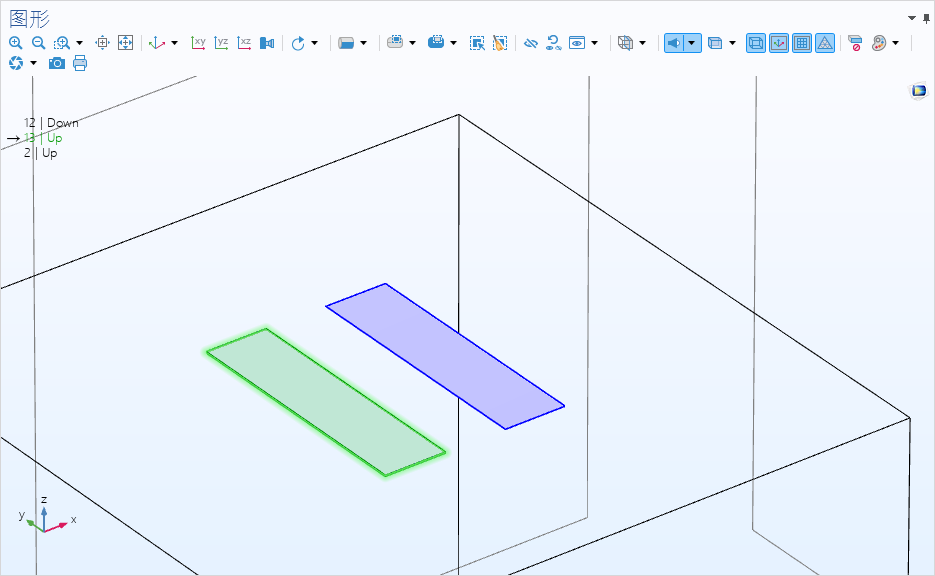

COMSOL薄膜电容仿真
本文最后更新于：8 天前
COMSOL薄膜电容仿真
在RF等领域的芯片设计中，经常遇到平面电路的电容仿真等问题，这里以COMSOL为演示，作为一种ANSYS Maxwell模块的替代。
环境
- Windows 11 专业版 22H2 22621.1848
- AMD Ryzen 5 3600 6-Core Processor 3.60 GHz
- 16Gx4 3200MHz
- COMSOL 6.1
GDSII
COMSOL
建立项目
点击模型向导,选择三维
选择AC/DC分类中的电场和电流下的静电(es)物理场，点击添加物理场接口
在研究面板中选择一般研究下的稳态，然后点击完成
进入到如下所示项目主界面
构建模型
导入GDSII
几何->导入->浏览->选择需要导入的GDSII文件
修改厚度为需要仿真的厚度，这里选择100nm
TIPS
如果需要导入多层图，勾选
手动控制高度并设置好参数对于存在多个图层的GDSII文件，建议勾选
按数据类型拆分来导入具体的图层
点击构建选定对象完成电容电路的模型构建
绘制衬底
几何->长方体
我们这里选择使用一块 500um x 500um x 450um 的长方体衬底
位置栏目下，基准选择居中，并填写对应的坐标，以确保衬底上表面与电路下表面正好接触
点击构建选定对象以生成模型，并点击右侧图形窗口中的缩放到窗口大小图标以缩放到合适大小
TIPS
对于比较复杂或者比较大的电路，建议扩大衬底以较好的近似真实情况
添加“空气域”
几何->球体
设定好半径参数后，点击右侧图形窗口的对应按钮，设为线框渲染并缩放到窗口大小
添加材料
材料->空材料
修改标签为pec，手动去除掉不需要添加理想导体的域（1，2）,相对介电常数这里保持默认的各向同性设置，填写具体值为1
同理，我们给衬底加上相对介电常数为9.3的c-plane蓝宝石材料以及给“空气域”加上相对介电常数为1的真空材料
设置物理场
为了在后续仿真结果中提取Maxwell电容矩阵，我们需要给两块极板分别加上一个监测用的终端并设置静电场仿真的参数扫描
添加域终端
物理场->域->终端
在域选择栏目中，选择LAYER1(导入1)来快速选中两块极板，并手动去除其中一块的选择
修改终端类型为电压
类似地，再添加一个终端并在域选择中选中另一块极板
TIPS
对于多块极板间的Maxwell电容矩阵的提取，每块极板都需要设置一个对应的电压类型的终端
终端设置面板中的
终端名称就是等下需要做参数扫描的值
终端类型决定了提取的是Maxwell电容矩阵还是Maxwell逆电容矩阵
设置终端扫描
在静电场仿真的设置面板中勾选使用手动终端扫描，并复制其自动生成的扫描参数名称（这里是TerminalName）
然后在全局定义的参数1下面设置一个全局参数
划分计算网格
通常而言，我们可以点击网格1设置面板中的全部构建来使用物理场控制的默认网格，但是我们这里的模型几何尺寸比例过于极端，自动划分的体网格很容易在极板上产生低质量网格，影响场分布计算的准确度，但是对于估算的电容矩阵而言一般影响有限，这里还是演示一下如何进行手动划分网格。
我们整体的网格划分思路为对表面电路进行扫掠网格划分，对衬底和“空气域”采用自由四面体网格
这样可以给表面电路提供较精确的计算保证同时减少不必要的计算来提高计算速度
高版本COMSOL求解器中还有自适应网格优化的设置，也可以考虑使用
添加边界网格划分
网格->边界->自由四边形网格
选中两块极板的上表面
TIPS
在右侧的图形窗口中，滚动滚轮可以实现鼠标对当前位置不同几何层的选择，依据窗口左上角的提示，即可选择上表面

右键自由四边形网格1添加两个分布节点用于手动控制网格的细化方案
以第一个分布为例，选择两块极板的上表面的长边，分布类型选择预定义
单元数设置为200，单元大小比设置为50（可自行调整来绘制比较干净的网格，也可不使用分布节点而是通过大小节点来绘制）
增长率设置为指数，勾选对称分布
另一个分布选择四条短边，最后选择构建选定对象，我们就获得了一个边缘细化中间粗化的表面网格
构建极板扫掠网格
网格->扫掠
域选择中，几何实体层设置为域，选择两块极板
源面选择两块极板的上表面，目标面选择两块极板的下表面
点击构建选定对象即可完成极板的扫掠网格构建（可以添加分布节点来调节扫掠的层数，这里由于网格父节点的设置，自动只创建了一层，不过计算精度应该是够用的）
剩余几何体自由四面体网格划分
网格-> 自由四面体网格
默认的集合实体层选择的是剩余部分，保持默认即可
点击构建选定对象，等网格构建完成
点击右侧图形窗口的透明图标，可以使得渲染半透明化，方便观察网格划分
右键网格1，选择网格信息可以查看网格划分的质量统计
这里自由四面体网格1有信息子节点显示存在9个低质量单元，可以继续优化网格，但是我们先不管了。
设置研究
研究-> 参数化扫描
添加之前在全局参数中设置的终端扫描参数，参数值列表填写1 2，也就之前的终端名称
计算
点击研究左上角的计算即可开始仿真
计算完成后会自动绘制电势图
提取Maxwell电容矩阵
右键派生值，选择全局矩阵计算
数据集选择研究1/参数化解 1(sol2)，参数选择保持默认的全部
在表达式中添加es.C - 麦克斯韦电容 - F
单位修改为fF
点击计算，右下角即会出现表格展示出Maxwell电容矩阵
可以得到
| Maxwell电容矩阵 | 1 | 2 |
|---|---|---|
| 1 | 17.523 | -17.523 |
| 2 | -17.523 | 17.523 |